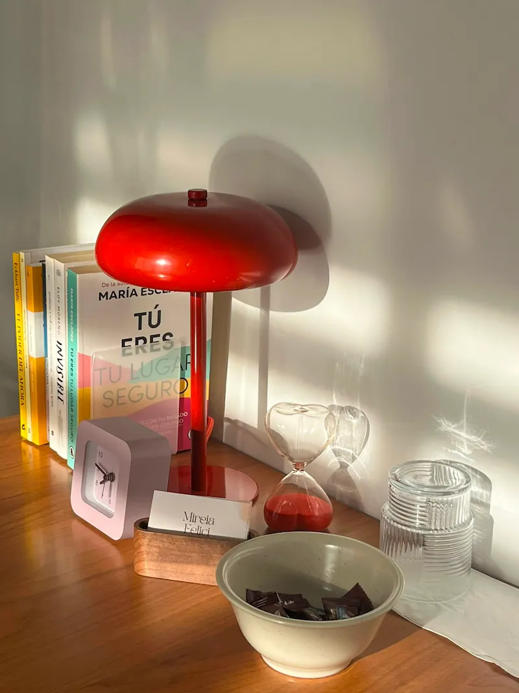

Enfoque
Acompañamiento profesional desde una perspectiva integradora y rigurosa.

Enfoque y Metodología
Acompañamiento profesional y cercanoLa terapia no es solo un espacio para hablar; es un proceso de construcción. Mi enfoque parte de la premisa de que tú eres quien mejor conoce tu historia, y mi papel es ofrecerte la perspectiva y las herramientas necesarias para navegar las dificultades que hoy te bloquean.
Mi metodología integra las corrientes de la psicología basada en la evidencia con una visión humanista. Entiendo que cada persona llega con un bagaje distinto, por lo que adapto el camino a tus necesidades particulares, ya sea para gestionar la ansiedad, el estado de ánimo, duelos o procesos de autoconocimiento.
El trabajo en sesión se estructura en torno a tres pilares:
Si buscas un espacio seguro donde abordar lo que te sucede con calma y rigor, podemos comenzar. La terapia es, ante todo, un acto de responsabilidad contigo misma/o.